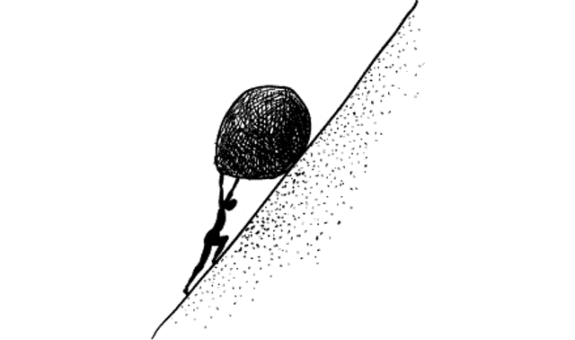

THE POST-GRAD PROBLEM

This project explores the post-graduation journeys of Northwestern students, focusing on where they move, the industries they enter, and how these decisions align with current trends in rent costs and starting salaries. Designed with anxious upperclassmen in mind, it provides a data-driven perspective on career and relocation choices to help students make informed decisions about their own futures. Through interactive visualizations, including a US map of post-grad destinations, a top cities table, industry salary breakdowns, and a live survey, the project aims to provide practical insights for navigating the competitive job market. By engaging with these tools, students can better understand how their goals and challenges compare to those of their peers, helping them to plan their next steps.
Upperclassmen, add your perspective to our research below: